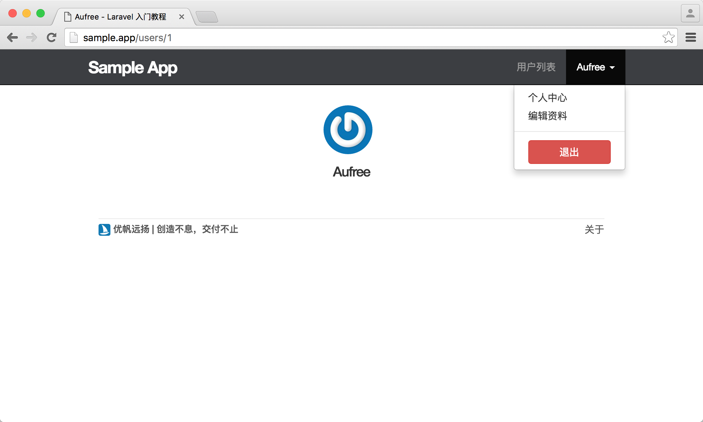
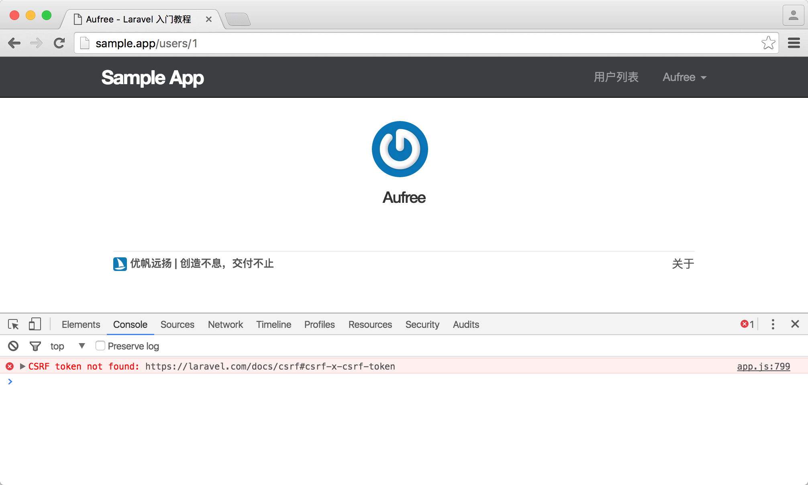

7.3. 用户登录
修改布局中的链接
现在登录成功的用户显示的页面信息看起来跟未登录用户没有太大区别，我们需要对网站顶部导航进行调整，当用户登录成功时，在顶部导航显示当前用户的用户名，并添加退出登录的按钮让用户可以随时退出登录状态；当用户未登录时，则显示登录按钮。
Laravel 提供了 Auth::check() 方法用于判断当前用户是否已登录，已登录返回 true，未登录返回 false。
下面让我们对顶部导航的页面结构进行调整，加上一些链接。
resources/views/layouts/_header.blade.php
<header class="navbar navbar-fixed-top navbar-inverse">
<div class="container">
<div class="col-md-offset-1 col-md-10">
<a href="/" id="logo">Sample App</a>
<nav>
<ul class="nav navbar-nav navbar-right">
@if (Auth::check())
<li><a href="#">用户列表</a></li>
<li class="dropdown">
<a href="#" class="dropdown-toggle" data-toggle="dropdown">
{{ Auth::user()->name }} <b class="caret"></b>
</a>
<ul class="dropdown-menu">
<li><a href="{{ route('users.show', Auth::user()->id) }}">个人中心</a></li>
<li><a href="#">编辑资料</a></li>
<li class="divider"></li>
<li>
<a id="logout" href="#">
<form action="{{ route('logout') }}" method="POST">
{{ csrf_field() }}
{{ method_field('DELETE') }}
<button class="btn btn-block btn-danger" type="submit" name="button">退出</button>
</form>
</a>
</li>
</ul>
</li>
@else
<li><a href="{{ route('help') }}">帮助</a></li>
<li><a href="{{ route('login') }}">登录</a></li>
@endif
</ul>
</nav>
</div>
</div>
</header>从上面代码可以看到，我们添加了用于显示用户列表的链接，『用户列表』的链接我们将在本书后面章节讲解其功能时进行替换。编辑资料链接则在用户更新功能开发完成后添加。本章节我们先把注意力放在用户退出登录按钮的具体实现上：
<form action="{{ route('logout') }}" method="POST">
{{ csrf_field() }}
{{ method_field('DELETE') }}
<button class="btn btn-block btn-danger" type="submit" name="button">退出</button>
</form>可以看到用户退出登录的按钮实际上是一个表单的提交按钮，在点击退出按钮之后浏览器将向 /logout 地址发送一个 POST 请求。但由于 RESTful 架构中会使用 DELETE 请求来删除一个资源，当用户退出时，实际上相当于删除了用户登录会话的资源，因此这里的退出操作需要使用 DELETE 请求来发送给服务器。由于浏览器不支持发送 DELETE 请求，因此我们需要使用一个隐藏域来伪造 DELETE 请求。
在 Blade 模板中，我们可以使用 method_field 方法来创建隐藏域。
{{ method_field('DELETE') }}其转化为 HTML 代码如下：
<input type="hidden" name="_method" value="DELETE">让我们接着加点样式代码对退出按钮进行优化。
resources/assets/sass/app.scss
/* header */
.
.
.
#logout {
cursor: default;
&:hover {
background-color: transparent;
}
}
/* footer */
.
.
.集成 Bootstrap 的 JavaScript 库
如果我们现在进行登录，则可以看到顶部导航链接已经加上，但当我们尝试点击用户名时，理应弹出的下拉菜单却没有任何响应。这是因为我们还没有引入 Bootstrap 的 JavaScript 组件库。Laravel 5.5 默认已经在 resources/assets/js/bootstrap.js 文件中为我们配置好了 jQuery 和 Bootstrap。
我们只需要在 app.js 中对其进行加载即可：
resources/assets/js/app.js
require('./bootstrap');
完成之后，需要重启 npm run watch-poll 让其编译新增的 app.js 文件。可使用 ctrl + c 退出 watch-poll 任务。然后重新运行：
$ npm run watch-poll在我们重新运行 watch-poll 任务之后，app.js 文件将会被编译到应用的 public 文件夹下。现在我们要在全局默认视图中引用编译后的 app.js 文件。
resources/views/layouts/default.blade.php
<!DOCTYPE html>
<html>
<head>
<title>@yield('title', 'Sample App') - Laravel 入门教程</title>
<link rel="stylesheet" href="/css/app.css">
</head>
<body>
@include('layouts._header')
<div class="container">
<div class="col-md-offset-1 col-md-10">
@include('shared._messages')
@yield('content')
@include('layouts._footer')
</div>
</div>
<script src="/js/app.js"></script>
</body>
</html>现在尝试再次点击下拉菜单，能发现它已经能够正常工作。

这时我们 使用 Chrome 开发者工具 可以看到有个报错：

这是因为 /resources/assets/js/bootstrap.js 文件中有以下代码：
let token = document.head.querySelector('meta[name="csrf-token"]');
if (token) {
window.axios.defaults.headers.common['X-CSRF-TOKEN'] = token.content;
} else {
console.error('CSRF token not found: https://laravel.com/docs/csrf#csrf-x-csrf-token');
}Laravel 默认创建了一个 JavaScript 变量，此变量会从页面的元标签中取 CSRF 密钥，取不到就会报错。本教程中我们不需要使用到该变量，把以上代码删除即可。
注册后自动登录
现在的注册功能已经可以正常使用，但我们希望在用户注册成功后能够自动登录，这样的应用用户体验会更棒。在 Laravel 中，如果要让一个已认证通过的用户实例进行登录，可以使用以下方法：
Auth::login($user);让我们接着对用户控制器的 store 方法进行更改，让用户注册成功后自动登录。
app/Http/Controllers/UsersController.php
<?php
namespace App\Http\Controllers;
use Illuminate\Http\Request;
use App\Http\Requests;
use App\Models\User;
use Auth;
class UsersController extends Controller
{
public function create()
{
return view('users.create');
}
public function show(User $user)
{
return view('users.show', compact('user'));
}
public function store(Request $request)
{
$this->validate($request, [
'name' => 'required|max:50',
'email' => 'required|email|unique:users|max:255',
'password' => 'required|confirmed|min:6'
]);
$user = User::create([
'name' => $request->name,
'email' => $request->email,
'password' => bcrypt($request->password),
]);
Auth::login($user);
session()->flash('success', '欢迎，您将在这里开启一段新的旅程~');
return redirect()->route('users.show', [$user]);
}
}